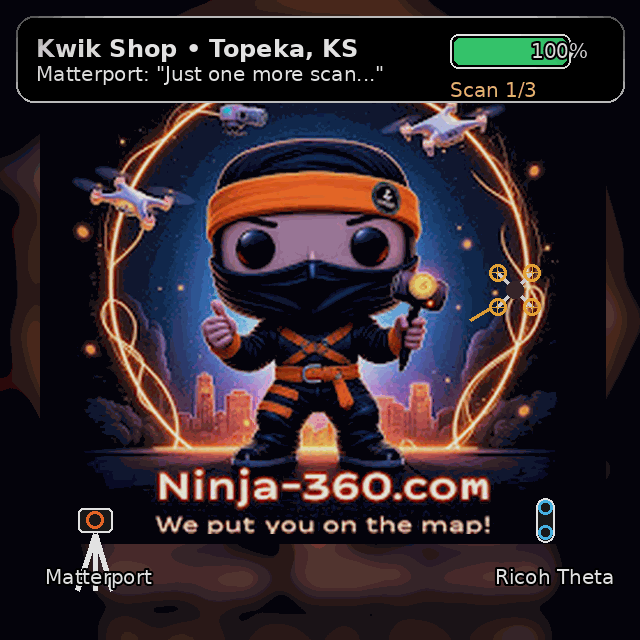

Tim Petet × Pavan Gantha (AZ Team). Seven milestones, all pointed at one target: the September push — fresh customers at scale. Each stage is scoped, has a "done means done" test, and gets paid as it lands — structure chosen per milestone: trade-out · milestone payment on completion · per-close fee.
Belt delivery task templates (from the execution-playbook spec) + onboarding workflows, so a White or Brown Belt delivery runs to checklist without live decisions from Tim.
| Window | Milestones | Funded by |
|---|---|---|
| Jul 13–19 | M0 complete (snippet + NAP standard page LIVE) · M4 Social Planner pre-flight · sizing agreed in writing for M1/M2 | Onboarding commitment / trade |
| Jul 20–31 | M1 — outbound unblocked (SMS verification + email auth) · M5 war-chest build starts in parallel | Milestone $ or trade — set first |
| August | M2 — Audit Engine end-to-end · M5 first verified batches load · first campaign fires (M1 green) · M6 courses done + AI agent demo by Aug 31 | August collected receivables · per-batch $ |
| September | THE BIG PUSH: campaigns at full clip on agency-grade rails · M3 — Delivery Pipeline · M4 — Networking pipeline | Per-close fees begin on NEW belts closed |
Every milestone above is already documented Ninja-360 scope — this roadmap turns it into a staged build with clean tests and payments that track real revenue. Choose the structure per stage — trade-out, milestone-on-completion, or per-close — itemize the hours, and the first stage starts this week.